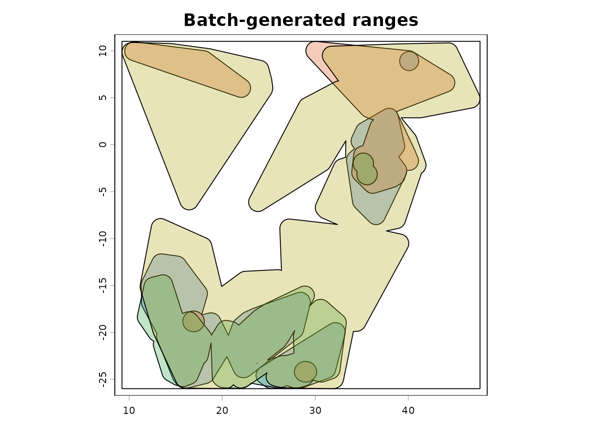

Part 3: Large Downloaded GBIF Tables
Source:vignettes/large-downloaded-gbif-tables.Rmd
large-downloaded-gbif-tables.RmdScope
This vignette documents the disk-based workflow for large downloaded GBIF tables. It is intended for situations where occurrences have already been exported from GBIF and the full table is too large or too inconvenient to keep in memory.
The workflow is built around three functions:
-
split_gbif_by_species()to split a large GBIF table into one file per species or GBIF key, -
species_csvs_to_ranges()to read those files sequentially and build one range per species, -
read_range_rds()to read the saved range outputs back from disk.
This workflow is meant for the point where direct credential-free
GBIF retrieval via rgbif (Chamberlain et al. 2022) is no
longer the most practical option. For many single-species or
moderate-volume tasks, get_gbif() is enough. For very large
downloaded exports, working from files on disk is usually the better
choice.
Why the workflow is split into two steps
get_range() is intentionally a single-species function.
That is scientifically sensible, because range inference depends on one
focal set of occurrences and one associated taxon concept at a time.
For large multi-species downloads, the package therefore separates file handling from range inference:
- first create one species file per GBIF key,
- then process those files one by one.
This design keeps peak memory use low and makes intermediate files easy to inspect, clean, archive, or parallelize outside R if needed.
It also keeps the biological interpretation clean. Each file still
corresponds to one focal GBIF taxon key, and each range is then inferred
with the same get_range() machinery described in Part
1.
Example data
The package includes a small GBIF-style offline example under
inst/extdata. The file is much smaller than a real GBIF
export, but it exercises the same workflow.
gbif_file <- ext_file("occ_example_4sps.csv")
utils::head(utils::read.delim(gbif_file, sep = "\t", stringsAsFactors = FALSE))
#> speciesKey species scientificName decimalLongitude
#> 1 5218781 Crocuta crocuta Crocuta crocuta (Erxleben, 1777) 34.91667
#> 2 5218781 Crocuta crocuta Crocuta crocuta (Erxleben, 1777) 34.91667
#> 3 5218781 Crocuta crocuta Crocuta crocuta (Erxleben, 1777) 34.91667
#> 4 5218781 Crocuta crocuta Crocuta crocuta (Erxleben, 1777) 34.91667
#> 5 5218781 Crocuta crocuta Crocuta crocuta (Erxleben, 1777) 34.91667
#> 6 5218777 Hyaena hyaena Hyaena hyaena (Linnaeus, 1758) 36.35000
#> decimalLatitude basisOfRecord
#> 1 -1.41667 PRESERVED_SPECIMEN
#> 2 -1.41667 PRESERVED_SPECIMEN
#> 3 -1.41667 PRESERVED_SPECIMEN
#> 4 -1.41667 PRESERVED_SPECIMEN
#> 5 -1.41667 PRESERVED_SPECIMEN
#> 6 -1.18333 PRESERVED_SPECIMENStep 1: split the downloaded table by species
The first step is to stream the input file in chunks and write one species file per GBIF key.
batch_root <- file.path(tempdir(), "gbif-range-batch-vignette")
split_dir <- file.path(batch_root, "split")
occ_dir <- file.path(batch_root, "occ_min")
range_dir <- file.path(batch_root, "ranges")
# Start from a clean temporary workspace so the vignette is reproducible.
unlink(batch_root, recursive = TRUE)
split_summary <- split_gbif_by_species(
input_file = gbif_file,
outdir = split_dir,
chunk_size = 100,
sep_in = "\t",
sep_out = "\t",
overwrite = TRUE,
verbose = FALSE
)
knitr::kable(
transform(split_summary,
species_file = basename(species_file)
)[, c("species_name", "n_records", "species_file")],
align = "l"
)| species_name | n_records | species_file | |
|---|---|---|---|
| 4 | Crocuta crocuta | 7217 | occurrences_speciesKey_5218781_Crocuta_crocuta.csv |
| 3 | Hyaena brunnea | 495 | occurrences_speciesKey_5218780_Hyaena_brunnea.csv |
| 2 | Hyaena hyaena | 106 | occurrences_speciesKey_5218777_Hyaena_hyaena.csv |
| 1 | Proteles cristata | 281 | occurrences_speciesKey_2433502_Proteles_cristata.csv |
A few implementation details are worth highlighting.
The splitter reads only the requested columns, not the full source
table. It keeps the file extension as .csv for convenience,
but the files remain tab-delimited by default. This preserves GBIF-style
exports while still producing species-specific files that are easy to
browse or reuse.
This is also the right place to simplify the table before any range-building starts. In a production workflow, this step can be used to retain only the columns needed for the later analysis and to create a species-level file archive that is easier to inspect than one monolithic GBIF export.
Step 2: build ranges sequentially from disk
For this vignette, the ecoregion layer is a single enclosing polygon built from the extent of the example records. This keeps the example fully offline and lightweight while still exercising the file-based range workflow.
In ordinary use, you would typically replace this with
ecoreg = "eco_terra" or with a spatial object returned by
read_ecoreg("eco_terra") (Olson et al. 2001; The Nature
Conservancy 2009). More generally, any polygon object with a named
character column works as ecoreg, and
make_ecoreg() accepts any spatially structured raster as
input — not only climate layers. See Part 1 for full details on
both.
occ_example <- utils::read.delim(gbif_file, sep = "\t", stringsAsFactors = FALSE)
eco_batch <- sf::st_sf(
data.frame(ECO_NAME = "batch_demo"),
geometry = sf::st_sfc(
sf::st_polygon(list(matrix(
c(
min(occ_example$decimalLongitude) - 5, min(occ_example$decimalLatitude) - 5,
max(occ_example$decimalLongitude) + 5, min(occ_example$decimalLatitude) - 5,
max(occ_example$decimalLongitude) + 5, max(occ_example$decimalLatitude) + 5,
min(occ_example$decimalLongitude) - 5, max(occ_example$decimalLatitude) + 5,
min(occ_example$decimalLongitude) - 5, min(occ_example$decimalLatitude) - 5
),
ncol = 2,
byrow = TRUE
))),
crs = 4326
)
)
range_summary <- species_csvs_to_ranges(
species_dir = split_dir,
ecoreg = eco_batch,
ecoreg_name = "ECO_NAME",
outdir = range_dir,
occ_outdir = occ_dir,
occ_save_as = "tsv",
range_save_as = "rds",
sep_in = "\t",
overwrite = TRUE,
degrees_outlier = 30,
clust_pts_outlier = 2,
buff_width_point = 1,
buff_incrmt_pts_line = 0.1,
buff_width_polygon = 1,
format = "SpatVector",
verbose = FALSE
)
knitr::kable(
transform(range_summary,
occ_file = sub(".*speciesKey_", "", basename(occ_file)),
range_file = sub(".*speciesKey_", "", basename(range_file))
)[, c("species_name", "n_points", "occ_file", "range_file")],
align = "l"
)| species_name | n_points | occ_file | range_file |
|---|---|---|---|
| Proteles cristatus septentrionalis Rothschild, 1902 | 232 | 2433502_Proteles_cristatus_septentrionalis_Rothschild_1902.tsv | 2433502_Proteles_cristatus_septentrionalis_Rothschild_1902.rds |
| Hyaena hyaena (Linnaeus, 1758) | 98 | 5218777_Hyaena_hyaena_Linnaeus_1758.tsv | 5218777_Hyaena_hyaena_Linnaeus_1758.rds |
| Parahyaena brunnea (Thunberg, 1820) | 413 | 5218780_Parahyaena_brunnea_Thunberg_1820.tsv | 5218780_Parahyaena_brunnea_Thunberg_1820.rds |
| Crocuta crocuta fisi Heller, 1914 | 5828 | 5218781_Crocuta_crocuta_fisi_Heller_1914.tsv | 5218781_Crocuta_crocuta_fisi_Heller_1914.rds |
Internally, species_csvs_to_ranges() reduces each
species file to the minimal structure expected by
get_range(): one focal species plus decimal longitude and
latitude. It can also save those minimal occurrence tables to disk,
which is useful if you want to inspect exactly what was passed to
get_range() after deduplication.
Once the occurrences are split to species level, it becomes straightforward to rerun the exact same batch with different ecoregions, different range arguments, or stricter deduplication while keeping the raw downloaded export unchanged.
The built-in ecoregion shortcut
The same workflow can resolve packaged ecoregions internally:
range_summary <- species_csvs_to_ranges(
species_dir = split_dir,
ecoreg = "eco_terra",
ecoreg_name = "ECO_NAME",
outdir = range_dir,
overwrite = TRUE
)This is the most convenient option when your downloaded table and your intended range product both target a broad terrestrial workflow.
It is also the most natural way to move from a large terrestrial GBIF export to a batch of ecoregion-constrained range maps without having to pre-load the ecoregion object yourself.
A production-style terrestrial batch
The offline vignette uses a simple polygon because it must build quickly and without network access. A real downloaded terrestrial workflow would normally look more like this:
split_summary <- split_gbif_by_species(
input_file = "gbif_download.tsv",
outdir = "species_occurrences",
chunk_size = 1e5,
sep_in = "\t",
sep_out = "\t",
overwrite = TRUE
)
range_summary <- species_csvs_to_ranges(
species_dir = "species_occurrences",
ecoreg = "eco_terra",
ecoreg_name = "ECO_NAME",
outdir = "species_ranges",
occ_outdir = "species_occurrences_min",
occ_save_as = "tsv",
range_save_as = "rds",
overwrite = TRUE
)This is the clearest batch version of the main terrestrial workflow: one GBIF export in, one species file per taxon, one saved range per taxon.
Inspect one species file before building ranges
One advantage of the split-first design is that you can inspect or clean individual species files before generating ranges. This is often useful when testing a new workflow on a few taxa before launching a full batch.
first_species_file <- split_summary$species_file[1]
utils::head(utils::read.delim(first_species_file, sep = "\t", stringsAsFactors = FALSE))
#> speciesKey species scientificName decimalLongitude
#> 1 5218781 Crocuta crocuta Crocuta crocuta (Erxleben, 1777) 34.91667
#> 2 5218781 Crocuta crocuta Crocuta crocuta (Erxleben, 1777) 34.91667
#> 3 5218781 Crocuta crocuta Crocuta crocuta (Erxleben, 1777) 34.91667
#> 4 5218781 Crocuta crocuta Crocuta crocuta (Erxleben, 1777) 34.91667
#> 5 5218781 Crocuta crocuta Crocuta crocuta (Erxleben, 1777) 34.91667
#> 6 5218781 Crocuta crocuta Crocuta crocuta (Erxleben, 1777) 34.91667
#> decimalLatitude
#> 1 -1.41667
#> 2 -1.41667
#> 3 -1.41667
#> 4 -1.41667
#> 5 -1.41667
#> 6 -1.41667That inspection step is simple, but it is often the moment where issues such as missing coordinates, duplicated points, or unexpected names become obvious.
Step 3: read and inspect the saved ranges
If the range outputs are saved as .rds,
read_range_rds() restores them to a simple list with
init.args and rangeOutput.
# Read the first saved range to inspect its structure.
first_range <- read_range_rds(range_summary$range_file[1])
names(first_range)
#> [1] "init.args" "rangeOutput"
class(first_range$rangeOutput)
#> [1] "SpatVector"
#> attr(,"package")
#> [1] "terra"The example below overlays every saved range in the batch summary. This is a useful diagnostic pattern when checking whether a batch run produced geometries with the expected extent and shape.
range_colors <- c(
grDevices::rgb(0.10, 0.40, 0.75, 0.30),
grDevices::rgb(0.85, 0.35, 0.10, 0.30),
grDevices::rgb(0.20, 0.65, 0.30, 0.30),
grDevices::rgb(0.70, 0.65, 0.10, 0.30)
)
combined_ext <- terra::ext(first_range$rangeOutput)
if (nrow(range_summary) > 1) {
for (i in 2:nrow(range_summary)) {
range_i <- read_range_rds(range_summary$range_file[i])
combined_ext <- terra::ext(
min(terra::xmin(combined_ext), terra::xmin(range_i$rangeOutput)),
max(terra::xmax(combined_ext), terra::xmax(range_i$rangeOutput)),
min(terra::ymin(combined_ext), terra::ymin(range_i$rangeOutput)),
max(terra::ymax(combined_ext), terra::ymax(range_i$rangeOutput))
)
}
}
terra::plot(combined_ext, col = NA, legend = FALSE, main = "Batch-generated ranges")
terra::plot(first_range$rangeOutput, add = TRUE, col = range_colors[1])
if (nrow(range_summary) > 1) {
for (i in 2:nrow(range_summary)) {
range_i <- read_range_rds(range_summary$range_file[i])
terra::plot(range_i$rangeOutput, add = TRUE, col = range_colors[i])
}
}
Practical advice
The disk-based workflow is most useful in three situations.
First, when a direct in-memory call to get_gbif() is not
appropriate because the project already relies on downloaded GBIF
exports.
Second, when a large multi-species table needs to be checked, cleaned, or archived at the species level before range inference.
Third, when the same species-specific occurrence files need to be
processed repeatedly with different get_range() settings,
ecoregions, or evaluation schemes.
The third point matters scientifically, not just computationally. It makes parameter sensitivity analyses much cleaner, because you can rerun the same archived species files under alternative ecoregion layers or buffering choices without changing the underlying occurrence input.
Take-home message
The disk-based workflow turns gbif.range into a
practical bridge between very large GBIF exports and species-level range
inference. Instead of treating file splitting and range building as an
external preprocessing step, Gbif.range provides a coherent, testable,
and documented path from a downloaded GBIF table to saved species ranges
on disk.
References
Chamberlain, S., Oldoni, D., & Waller, J. (2022). rgbif: interface to the global biodiversity information facility API. https://doi.org/10.5281/zenodo.6023735
Olson, D. M., Dinerstein, E., Wikramanayake, E. D., Burgess, N. D., Powell, G. V. N., Underwood, E. C., … Kassem, K. R. (2001). Terrestrial ecoregions of the world: a new map of life on Earth. BioScience, 51(11), 933–938. https://doi.org/10.1641/0006-3568(2001)051[0933:TEOTWA]2.0.CO;2
The Nature Conservancy (2009). Global Ecoregions, Major Habitat Types, Biogeographical Realms and The Nature Conservancy Terrestrial Assessment Units. Cambridge (UK): The Nature Conservancy. https://geospatial.tnc.org/datasets/b1636d640ede4d6ca8f5e369f2dc368b/about